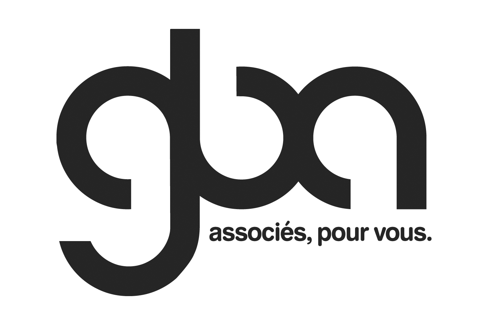

Nos Sponsors et Partenaires
Nous tenons dans un 1er temps à remercier notre partenaire principal, GBA Avocats pour son aide précieuse !
GBA accompagne les entreprises de toute taille (PME, groupes familiaux, filiales de grands groupes ou de groupes financiers, …), de tout domaine d’activité (services, bâtiment, industrie, techno, start-up, informatique, profession libérale, …), de toute nationalité, dès leur création et à tous les stades de leur développement s’inscrivant ainsi dans leur histoire, leurs projets et leur évolution. Le Cabinet intervient en droit des affaires au sens large, en français et en anglais, aussi bien pour les besoins juridiques quotidiens des entreprises en droit des sociétés, social, fiscal, de la propriété intellectuelle, des contrats ou économique, qu’au soutien d’opérations plus complexes de création d’entreprises communes, levées de fonds, définition et déploiement de stratégies, introduction sur les marchés règlementés, fusion-acquisition, etc.
Nos autres partenaires
OVERSTIM.s – Entreprise française basée à Plescop et spécialisée dans la nutrition sportive depuis plus de 30 ans. Elle propose une large gamme de produits techniques : boissons énergétiques, barres, gels et solutions de récupération, adaptés aux besoins des sportifs d’endurance. Vous aurez l'occasion de goûter leur boisson de récupération à l'arrivée, et les podiums masculins et féminins pourront repartir avec des lots (barres, gels, ceintures...) !
E. Leclerc Vannes – Hypermarché situé à Vannes, membre du mouvement coopératif E. Leclerc. Propose une large gamme de produits alimentaires, non-alimentaires et s'associe au Tour de l'île d'Arz pour proposer de quoi reprendre des forces à la fin de la course.
Kerbi – Marque bretonne (plus précisément à Arradon, juste en face de l'île d'Arz !) fondée en 2020, propose des soins solaires certifiés bio, formulés avec des filtres minéraux sans nanoparticules ni filtres chimiques. Engagée pour la santé de la peau et la préservation des océans, la marque développe des produits respectueux de l'environnement, avec des emballages éco-conçus en plastique végétal ou en carton. Les podiums féminins et masculins auront la chance de repartir chacun avec une crème solaire et un lait hydratant, made in bzh !
L’Escale en Arz – Établissement hôtelier situé en bord de mer sur l’île d’Arz. L’Escale propose hébergement et restauration toute l’année, et accueille les visiteurs dans un cadre authentique et convivial. Un bon cadeau d'une nuit avec petits déjeuners pour deux personnes sera à gagner, via un tirage au sort parmi les finishers !
Nominoë – Marque de cosmétiques bio fabriqués en Bretagne. Inspirée par les plantes médicinales de la région, elle développe des soins haut de gamme distribués en pharmacie et parapharmacie. Vous aurez la chance vous débarbouiller le visage après la course avec leurs produits ! Une participante sera également tirée au sort et se verra remettre un coffret, rempli de bons produits de la marque Nominoë !
Tonton Outdoor – Boutique vannetaise spécialisée dans l’équipement pour les sports outdoor : trail, randonnée, vélo, alpinisme. Propose un bon de réduction à chaque participant, à valoir dans leurs magasins de Vannes, Paris et désormais Nantes !
Mairie de l’Île d’Arz – Partenaire institutionnel, la mairie apporte son soutien logistique dans l'organisation du Tour de l'île d'Arz.